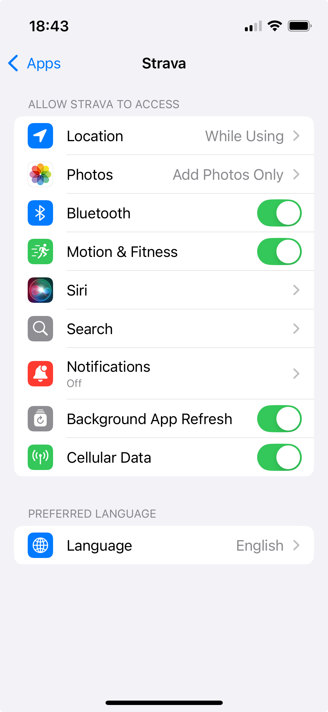
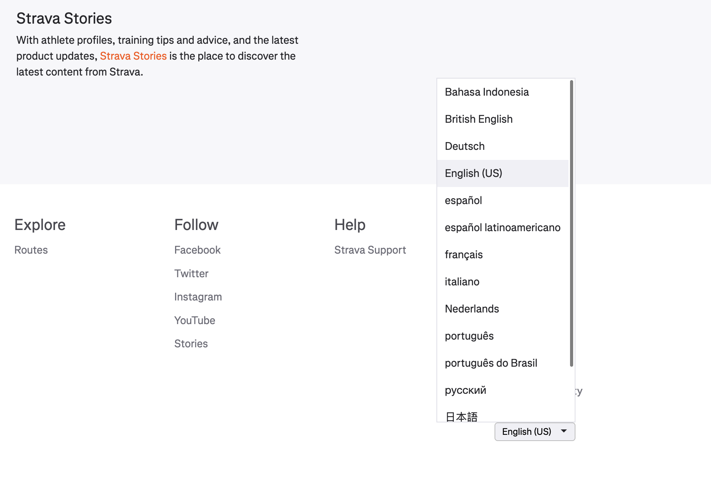
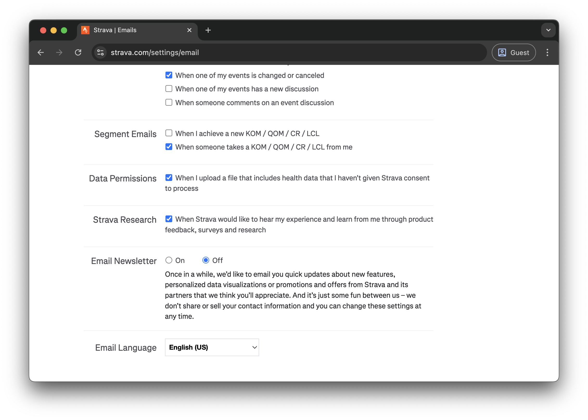
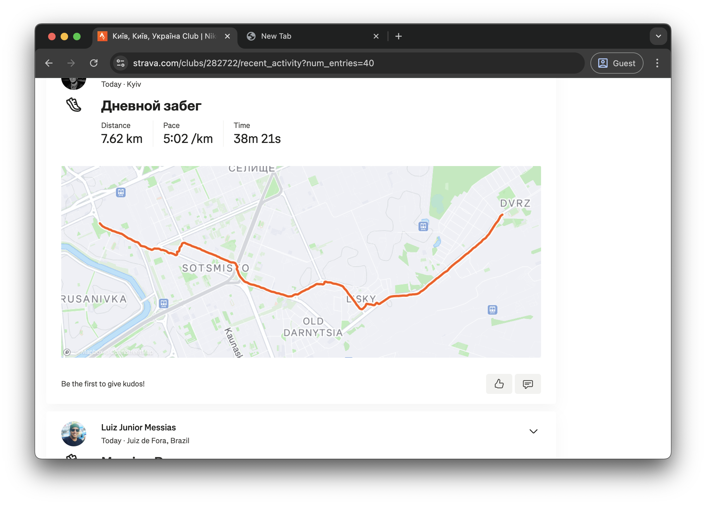
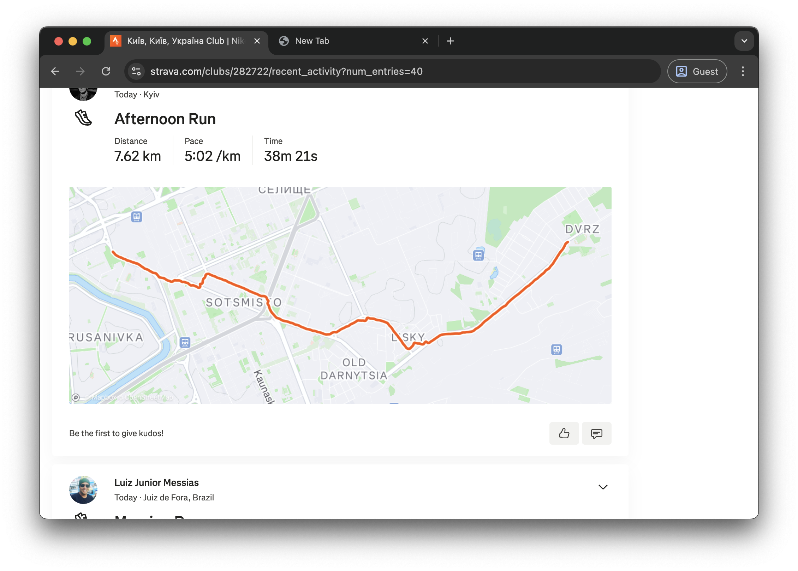
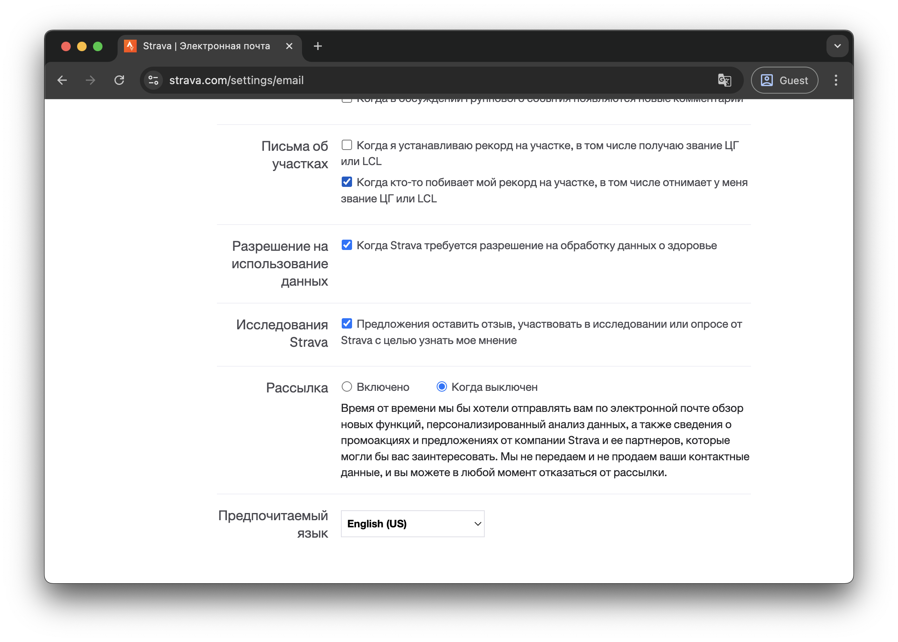
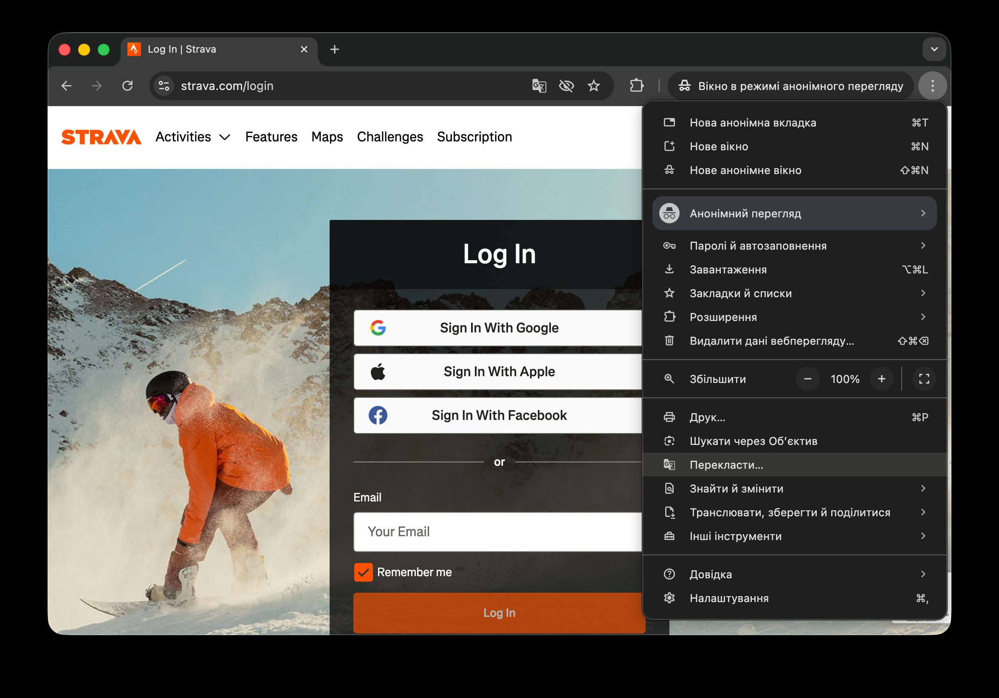
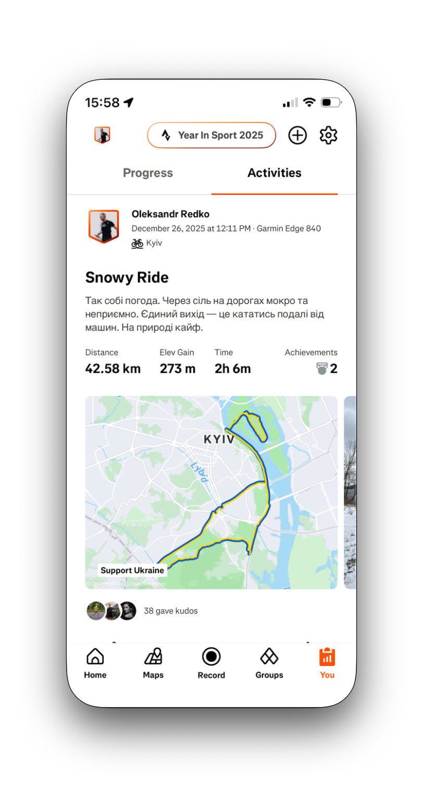
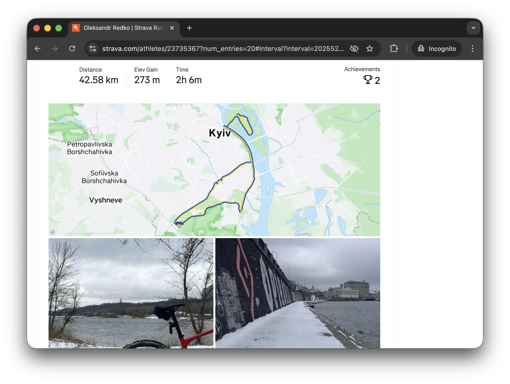
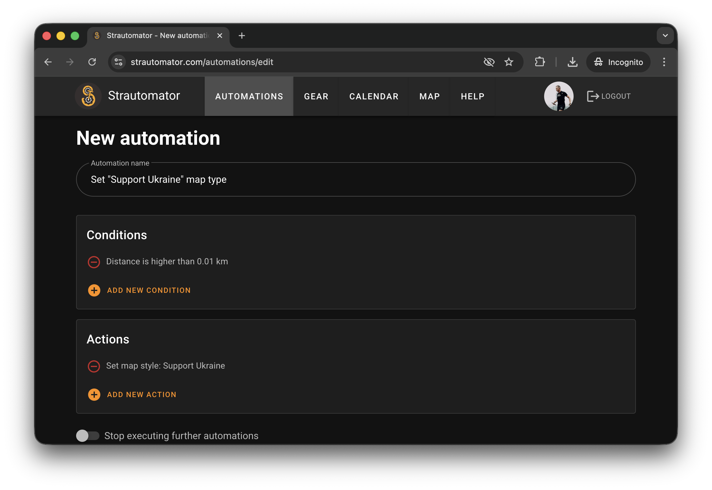

Ідея додати українську в Strava
20 травня 2023 року на порталі Strava Community Hub користувач Ihor створив ідею для додавання української мови в Strava додаток та сайт.
Please add Ukrainian to the app. At least for basic functions. After the outbreak of the war, the issue of language became very important for Ukrainians. Many Ukrainians have switched to their native language, and they would be very grateful to use Ukrainian instead of russian.Оновлення станом на 24 березня 2026 року. Після реорганізації платформи Strava чомусь прибрала цю ідею з порталу. Видає "Oops! This page requires login" для всіх користувачів, навіть для тих, хто залогінений. Сподіваємось, це лише тимчасове явище, і Strava поверне її найближчим часом.
Скріншот нижче зроблений у листопаді 2025 року, коли топік ще був доступний на порталі та мав 1900 голосів з 740 коментарями.
Як налаштувати Strava на англійську
Якщо ви знаєте англійську мову, налаштуйте Strava додаток та вебсайт на відображення цією мовою.
Якщо не знаєте англійську, читайте наступний розділ.
Для цього потрібно виконати три кроки:
- Змінити мову додатку (iOS, Android).
- Змінити мову веб-інтерфейсу.
- Змінити мову, яку Strava використовує для назв активностей.
1. Як змінити мову додатку
Як змінити мову в iOS
Спочатку додайте англійську мову по цій інструкції. Далі виконайте наступне:
- Відкрийте програму "Параметри" (Settings)
- Натисніть "Програми" (Apps).
- Виберіть додаток "Strava".
- У "Пріоритетна мова" (Preferred Language) виберіть "English".
Важливо вибрати саме англійську. Якщо встановити українську, то Strava відображатиметься російською.

Як змінити мову в Android
Робимо по цій інструкції:
- Відкрийте додаток "Налаштування" (Settings)
- Натисніть "Система" (System) > "Мови" (Languages) > "Мови додатків" (App Languages).
- Виберіть додаток "Strava".
- Виберіть "English".
2. Як змінити мову веб-інтерфейсу
- Залогінитись в браузері з комп'ютера в Strava.
- Долистати вниз, у футері праворуч вибрати мову "English (US)" або "British English".

3. Як змінити мову, якою Strava називає активності
Щоб змінити мову, яку Strava використовує для автоматичних назв активностей, потрібно:
- Відкрити в браузері (обов'язково) "Settings - Email Notifications".
- Долистати донизу і вибрати "Email Language: English".
Ви все правильно зрозуміли: щоб змінити мову, яку Strava використовує для називання активностей, потрібно налаштувати мову листів. Це така особливість Strava.



Якщо Strava в браузері відображається російською
Щоб змінити мову наз активностей Strava з російської на англійську потрібно відкрити в браузері "Настройки - Уведомления по эл. почте", догортати донизу і вибрати "Предпочитаемый язык: English (US)".

Як користуватись Strava, якщо не знаєте англійську
Якщо ви не знаєте англійську, ви можете використовувати вбудований в браузер Chrome перекладач або завчити кілька англійських слів.
Використання вбудованого в Chrome перекладача
Перекладач в десктопному браузері Chrome
Для того, щоб Chrome перекладав автоматично Strava з англійської, потрібно зробити наступне:
- Переконатись, що браузер відображається українською.
- Залогінитись в Strava.
- Натиснути в браузері праворуч вгорі "Налаштування" - "Перекласти", вибрати "Українська".
- Додатково в меню перекладу праворуч вибрати галочку "завжди перекладати з такої мови: англійська".

В результаті всі сторінки Strava автоматично за допомогою браузера перекладатимуться українською:
Перекладач в мобільному браузері Chrome (iOS)
Для того, щоб Chrome в iOS перекладав автоматично Strava з англійської, потрібно зробити наступне:
- Переконатись, що браузер відображається українською.
- Залогінитись в Strava з мобільного браузера. Якщо після логіну перенаправляє в Strava додаток, то відкрити strava.com в браузері ще раз.
- Натиснути в браузері праворуч внизу "Налаштування" - "Перекласти", вибрати "Українська".
Історія боротьби за українську мову в Strava
Internationalizing Strava
Про проблеми локалізації від інженерів Strava.
Читати на Medium →Переклад Strava українською - боротьба продовжується
Публікація в блозі Yarema про спроби донести до Strava техпідтримки важливість української мови.
Читати в блозі →Adding the Ukrainian language to the application
Створення ідеї на Strava Community Hub для додавання української мови.
Переглянути на Community Hub →Please add Ukrainian language in Strava
Дискусія на Reddit про додавання української мови в Strava.
Читати на Reddit →Як додати карту Support Ukraine
Наприкінці березня 2022 року Strava додала карту Support Ukraine, щоб підтримати Україну.
Але в листопаді 2025 року ця та інші типи карт зникли з додатку та сайту Strava. Вони були замінені на "Causes". Додатково Strava дозволила вставляти посилання на сторінки підтримки справи в опис активності. Але ж ми хочемо бачити карту "Support Ukraine" на своїх маршрутах!
На щастя, є можливість додавати карту Support Ukraine програмно через API. Станом на кінець листопада 2025 року карти продовжують відображатися в додатку та на сайті.


Також є петиція, що закликає Strava повернути карту Support Ukraine офіційно. Підтримати її можна тут.
Як встановити карту "Support Ukraine" через ActivityFix
Існує сторонній веб-сайт ActivityFix, який дозволяє редагувати активності в Strava залежно від різних параметрів. Під капотом використовується Strava API. Алгоритм такий:
- Залогіньтесь в ActivityFix через ваш акаунт Strava.
- Ліворуч на панелі "Dashboard" виберіть "Add Rule".
- Введіть наступні параметри для правила:
- What would you like to call this rule: Use "Support Ukraine" map for all activities.
- What should be changed: Change map type to Support Ukraine.
- When should it be changed: Activity type is Any Activity.
- If the rule matches: Yes: Continue processing remaining rules.
- Натисніть "Save Rule". Воно буде додано в список правил "My Rules".

- Опціонально: можна перевірити правило на одній активності, натиснувши "Test Rule".

Після цього всі нові активності, які ви завантажите в Strava, автоматично отримуватимуть карту "Support Ukraine".
Існує можливість застосувати правило до наявних активностей, натиснувши "Process Old Activities". Дивіться інструкцію на YouTube ActivityFix.
Схожим чином можна вставлювати карту Support Ukraine через інші сторонні сервіси, наприклад, Strautomator.

Як встановити карту "Support Ukraine", використовуючи Strava API
Якщо ви вмієте програмувати, можна додати карту "Support Ukraine" через Strava API, використовуючи Update Activity ендпоінт. Алгоритм наступний:
- Отримуємо токен доступу по інструкції.
- Виконуємо PUT запит на ендпоінт https://www.strava.com/api/v3/activities/{activity_id} з JSON тілом запиту {"selected_polyline_style":"ukraine"}.
curl -X PUT "https://www.strava.com/api/v3/activities/{activity_id}" \
-H "Authorization: Bearer {access_token}" \
-H "Content-Type: application/json" \
-d '{"selected_polyline_style":"ukraine"}'
В запиті {access_token} - токен доступу з першого кроку, {activity_id} - ідентифікатор активності.
Параметр selected_polyline_style незадокументований і може змінитися в майбутньому. Всі його значення описані тут.